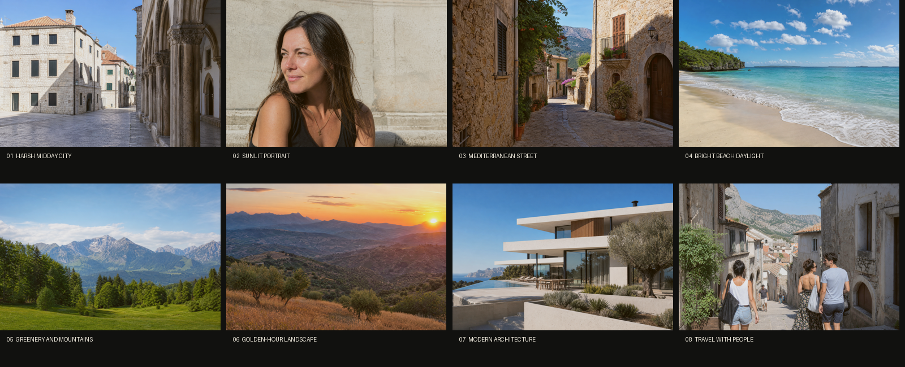

A cinematic color study / 01
Chasing
the light.
Warm stone, dimensional shadows and a quiet touch of honey. A standalone creative transform designed for Apple Log 2 and Apple Wide Gamut, finishing in Rec.709 SDR gamma 2.4.
Download the .cube ↗Simulation, not camera footage. These eight AI-generated SDR images were transformed into simulated Apple Log 2. Before is the neutral SDR reference; after is rendered by the delivered LUT. No physical iPhone or Blackmagic Camera test was performed. Brightness depends on your screen and browser.
The collection / 08 scenes
See the difference.
Move each slider to compare. Open either image for a larger view.
At a glance
The contact sheet.
Eight after images, one coherent look.
